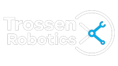
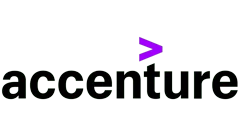
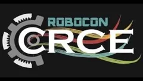

Shantanu Parab
Senior Robot Learning Engineer building robots that learn: vision-language-action and imitation-learning policies, the data pipelines that feed them, and ROS 2 systems.
Now: Senior Robot Learning Engineer at Trossen Robotics
Highlights
Robots I've built, trained and simulated, from Robocon competition bots to learned quadruped gaits.
Work
From leading an undergraduate Robocon team to shipping robot-learning tools.
-

Trossen Robotics
- Senior Robot Learning Engineer Mar 2026 – present
- Robotics & ML Engineer Jan 2025 – Mar 2026
- Technical Evangelist (Robotics & ML Intern) Jul 2024 – Dec 2024
I lead robot learning at Trossen: bringing vision-language-action and imitation-learning policies (π0, π0.5, ACT, CrossFormer, Octo, diffusion policies) to Trossen AI Arms, and running the Robot Learning Experiments program from data collection through training and evaluation.
- Technical and product lead for the Trossen SDK, a modular C++ data-collection platform: episode lifecycle, LeRobot and MCAP storage, synchronized multi-camera recording, mobile-base support, teleoperation and Python bindings, plus its React web app.
- Lead the company's data-collection effort and mentor a team of engineers and interns.
- Integrated ALOHA into Hugging Face LeRobot, shipped the Aloha Solo kit, and run Trossen's community presence on the Hugging Face Hub.
- Prototyped Meta Quest VR teleoperation and cloud training on RunPod and AWS SageMaker.
- Advise enterprise and research labs on data collection and evaluation; represented Trossen at ICRA 2025 and the Actuate conference.
- PyTorch
- VLA / imitation learning
- LeRobot
- C++
- Python
- ROS 2
- React
-
University of Maryland
Graduate Teaching Assistant, Path Planning & Robot Modeling
Co-taught Path Planning for Autonomous Robots (ENPM661) to 100+ students across three sections, leading labs on BFS, A*, RRT* and SLAM with TurtleBot, ROS and Gazebo, and designing the assignments, final exam and a path-planning competition. For Robot Modeling (ENPM662) I led the course's move from ROS 1 to ROS 2 Humble: syllabus, project templates and documentation.
- Path planning
- Robot modeling
- Python
- C++
- ROS
-

Accenture
Associate Software Developer
Kept Intel's CIBR inventory-management system running: diagnosed recurring data-flow and database failures, traced a critical defect where new 5-character product codes broke 4-character handling logic and fixed it at the core, and extended the C++ ETL application for new data formats, cutting failure rates by 80%.
- C++
- MySQL
- ETL
- PL/SQL
- Python
-

Robocon CRCE
Team Captain
Captained a 25-person undergraduate team that built two semi-autonomous robots for ABU Robocon's rugby-themed challenge, overseeing mechanical, electronics and software and securing sponsorships; the team placed All India Rank 11. Before that I designed battery-management circuits and PCBs as an electronics apprentice, and later mentored the 2023 team.
- Python
- Arduino
- Raspberry Pi
- SolidWorks
Education
-
University of Maryland, A. James Clark School of Engineering
Professional Master's in Robotics, May 2024, GPA 3.97
-
Fr. Conceicao Rodrigues College of Engineering, University of Mumbai
Bachelor of Electronics Engineering, May 2021, GPA 3.65
Projects
Simulation, perception and learning work. Open any project for videos, write-ups and code.
Writing & talks
Paper reviews, tutorials and conversations about robot learning.
Skills
- learnPyTorch
- learnReinforcement learning
- learnImitation learning
- learnVLA models (π0, ACT, Octo)
- learnLeRobot
- learnDiffusion policies
- learnJAX
- learnTensorFlow
- roboticsROS 2
- roboticsMuJoCo
- roboticsGazebo plugins
- roboticsURDF
- roboticsInverse kinematics
- roboticsPath planning
- roboticsSLAM
- roboticsMoveIt
- roboticsTeleoperation
- learnNeRF
- learnPointNet
- learnCNN / LSTM
- codePython
- codeC++
- visionOpenCV
- visionYOLO
- visionMiDaS
- visionLiDAR
- vision3D vision
- hwRaspberry Pi
- hwArduino
- cadSolidWorks
- cadBlender
- codeReact
- opsDocker
- opsGitHub Actions
- opsRunPod
- opsAWS SageMaker
- hwRealSense / ZED
- codeGit
- codeLinux
- codeJava
- codePL/SQL
Let's build something that moves.
Email is the fastest way to reach me, whether it's about robot learning, ALOHA and LeRobot, or something you're building.
shantanuparab99@gmail.com